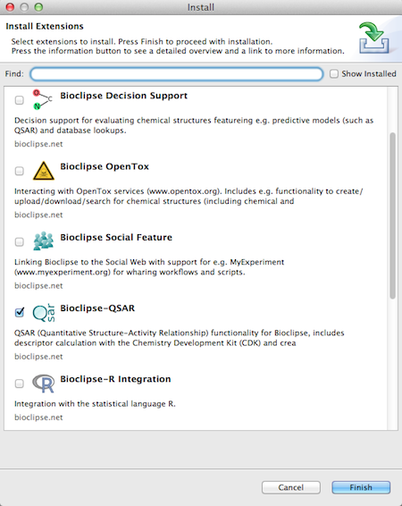

Bioclipse-QSAR is a set of plugins for Bioclipse and available from the online updates of Bioclipse.
Bioclipse is available with installation instructions from www.bioclipse.net.
After installing Bioclipse, start it and go to the top menu Install > New feature... . Check Bioclispe-QSAR and press finish, and after restart you have QSAR features installed.
